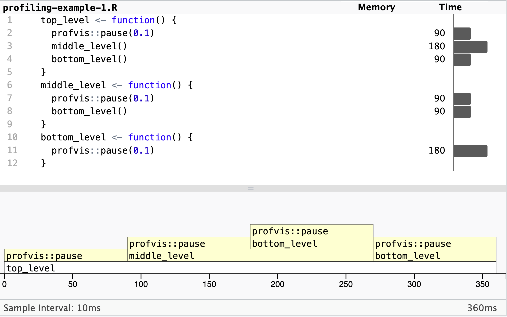
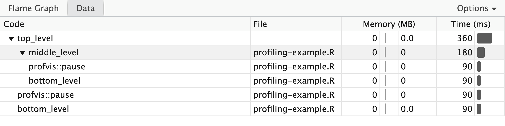
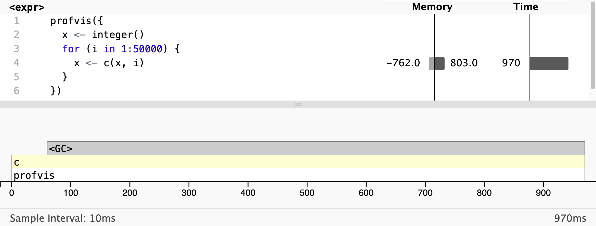

All in One View
Content from Introduction to Profiling
Last updated on 2026-11-09 | Edit this page
Overview
Questions
- Why should you profile your code?
- What are the options for profiling in R?
- Which test case should be profiled?
Objectives
- Explain the benefits of profiling code
- Differentiate between types of profiler
- Explain how to select an appropriate test case for profiling
Introduction
Performance profiling is the process of analysing and measuring the performance of a program or script during its execution. Here, performance means how efficiently your code uses resources, especially time (how long it takes to run) and memory (how much RAM it needs), to produce a correct result.
Good performance is fast enough for your purposes, rather than necessarily as fast as possible. Profiling is useful when you have written any code that will be running for a substantial period of time. As your code grows in complexity, it becomes increasingly difficult to estimate where time is being spent during execution. Profiling allows you to measure and visualise where the time is being spent, and therefore where to focus your efforts on optimising your code for performance speed-ups.
Profiling is a relatively quick process which can either provide you the peace of mind that your code is efficient, or highlight any performance bottlenecks. There is limited benefit to optimising components that may only contribute a tiny proportion of the overall runtime. Identifying bottlenecks allows optimisation to be precise and efficient, potentially leading to significant speed-ups enabling faster research. In extreme cases, addressing bottlenecks has enabled programs to run hundreds or thousands of times faster!
Increasingly, particularly with relation to HPC, attention is being paid to the energy usage of software. Profiling your software will provide you the confidence that your software is an efficient use of resources.
When to profile
Profiling is most relevant to working code, when you have reached a stage that the code works, i.e. produces correct results, and are considering deploying it.
Any code that will run for more than a few minutes over its lifetime and isn’t a quick one-off script can benefit from profiling.
All Programmers Can Benefit
Even professional programmers make oversights that can lead to poor performance, and which can be identified through profiling.
For example, Grand Theft Auto Online, which has allegedly earned over $7bn since its 2013 release, was notorious for slow loading times. 8 years after its release a ‘hacker’ had enough. They reverse engineered and profiled the code to enable a 70% speedup!
How much revenue did that unnecessary bottleneck cost, through user churn?
How much time and energy was wasted, by unnecessarily slow loading screens?
Types of profiler
There are multiple approaches to profiling. Most programming languages have one or more tools available covering these approaches. Whilst these tools differ, their core functionality can be grouped into several categories.
Manual profiling
Similar to using print() for debugging, manually timing
sections of code can provide a rudimentary form of profiling.
R
t_a <- proc.time()[["elapsed"]]
# A: Do something
t_b <- proc.time()[["elapsed"]]
# B: Do something else
t_c <- proc.time()[["elapsed"]]
# C: Do another thing
t_d <- proc.time()[["elapsed"]]
paste("A:", t_b - t_a, "seconds")
paste("B:", t_c - t_b, "seconds")
paste("C:", t_d - t_c, "seconds")
Above is only one example of how you could manually profile your R code. There are other similar techniques.
Whilst this can be appropriate for profiling narrow sections of code, it becomes increasingly impractical as a project grows in size and complexity.
Furthermore, it is also unproductive to be routinely adding and removing these small changes, especially if they interfere with the required outputs of a project.
We can use benchmarking to more accurately time our code. We will return to this in the episode on microbenchmarking.
Function-level profiling and line-level profiling
Software is typically comprised of a hierarchy of function calls, both functions written by the developer and those used from the language’s standard library and third-party packages.
Function-level profiling analyses where time is being spent with respect to functions. Typically, function-level profiling will calculate the number of times each function is called and the total time spent executing each function, inclusive and exclusive of child function calls.
This allows functions that occupy a disproportionate amount of the total runtime to be quickly identified and investigated.
Line-level profiling provides greater granularity, analysing where time is being spent with respect to individual lines of code. This will identify individual lines of code that occupy an disproportionate amount of the total runtime.
If you are familiar with other programming languages, you may be aware that they may have different tools for function-level and line-level profiling (e.g. Python has cProfile for function-level profiling and line_profiler for line-level profiling, as well as different packages for visualising, e.g. snakeviz and viztracer). However, in R, we have one main package for profiling, profvis, which combines both function-level and line-level profiling, as well as the timing and the visualisation. Working with profvis is the subject of the next episode.
Selecting an appropriate test case
The act of profiling your code, collecting additional timing metrics during execution, will cause your program to execute slower. The slowdown is dependent on many variables related to both your code and the granularity of metrics being collected.
Similarly, the longer your code runs, the more code that is being executed, the more data that will be collected. A profile that runs for hours could produce gigabytes of output data.
Therefore, it is important to select an appropriate test-case that is both representative of a typical workload and small enough that it can be quickly iterated. Ideally, it should take no more than a few minutes to run the profiled test-case from start to finish, though there may have circumstances where something that short is not possible. Be aware, though, that if the test case runs too quickly, or is too small, it may not reveal the bottlenecks that affect the full run.
For example, you may have a model which normally simulates a year in hourly time-steps. It would be appropriate to begin by profiling the simulation of a single day. If the model scales over time, such as due to population growth, it may be pertinent to profile a single day later into a simulation if the model can be resumed or configured. A larger population is likely to amplify any bottlenecks that scale with the population, making them easier to identify.
Exercise (5 minutes)
Think about a project where you’ve been working with R. Do you know where the time during execution is being spent?
Write a short plan of the approach you would take to investigate and confirm where the majority of time is being spent during its execution.
- What tools and techniques would be required?
- Is there a clear priority to these approaches?
- Which test-case/s would be appropriate?
- Profiling is a relatively quick process to analyse where time is being spent and identify bottlenecks during a program’s execution.
- Code should be profiled when ready for deployment if it will be running for more than a few minutes during its lifetime.
- There are several types of profiler each with slightly different purposes.
- The standard package for profiling in R is profvis.
- A representative test-case should be profiled. It should be large enough to amplify any bottlenecks whilst executing to completion quickly.
Content from Profiling with profvis
Last updated on 2026-11-09 | Edit this page
Overview
Questions
- How can the profvis package be used to profile an R program?
- How can the output from
profvis()be interpreted?
Objectives
- Explain how profvis profiles R code
- Use profvis in RStudio to visualise profiling information for an R script
- Interpret profvis views to identify the functions where time is being spent during a script’s execution
- Interpret profvis views to identify the functions which result in heavy memory allocation
Introduction
To make our code more efficient, we first need to identify the bottlenecks, in terms of time and/or memory usage.
Software is typically comprised of a hierarchy of function calls, both functions written by the developer and those used from the language’s standard library and third-party packages.
We will use the profvis package to profile code and visualise the results. profvis is a sampling profiler. It stops the execution of code every few milliseconds and records:
- The call stack: the function currently being executed, the function that it was called from and so on up to the top-level function call.
- The memory allocated and released since the last record.
A sampling profiler makes a trade-off between accuracy and performance. There is always variability in the time it takes a function to run and the accuracy of the timer. Each time you profile, you’ll get a slightly different answer, though the variability is most pronounced in the functions that take the shortest amount of time to run, i.e. those that are of the least interest to us.
Example
Below are some nested functions. The profvis::pause()
function provides a synthetic bottleneck by holding up execution of the
code for the specified number of seconds.
R
top_level <- function() {
profvis::pause(0.1)
middle_level()
bottom_level()
}
middle_level <- function() {
profvis::pause(0.1)
bottom_level()
}
bottom_level <- function() {
profvis::pause(0.1)
}
If we profile the execution of top_level, after 0.1
secs, we’d record the call stack: "pause",
"top_level", i.e. we’re in the execution of
"pause", which was called from "top_level".
After 0.2 secs, we’d record: "pause",
"middle_level", "top_level", i.e. we’re in
"pause", as called from "middle_level", which
is turn was called from "top_level"
Exercise 1
Continuing the example above, write down the call stack from calling
top_level() after 0.3 secs and after 0.4 seconds.
After 0.3 secs: "pause", "bottom_level",
"middle_level", "top_level"
After 0.4 secs: "pause", "bottom_level",
"top_level"
Using profvis
Follow along
Download the R source for the example and follow along with the worked example on your own machine. Save it into an RStudio project.
You should have installed the profvis package as
part of the setup for this lesson. In the RStudio project where you have
saved the example R script, create a profiling.R script
with the following:
R
library(profvis)
source("profiling-example-1.R")
profvis(top_level())
Storing code in its own script then calling it with
source() ensures the best connection between profiling data
and source code.
Note that at the time of writing, profvis appears to work in Positron, but gives unexpected results. Use RStudio for profiling R code.
Interpretting the flame graph
An interactive HTML document will open with the results. In RStudio this will open in the source pane; click “show in new window” button to open the document in a new window. It should look something like this:

In the flame graph the yellow bars correspond to lines in the source file shown above the graph. The HTML is interactive. Hover over a bar for further details, and to see its corresponding line in the script.
In the overall time of 360ms we see:
- Four equal-sized blocks for each pause of 90ms (0.09 seconds)
- All time is spent in the top-level function
- Half the time is spent in the mid-level function
- Half the time is also spent in the bottom-level function
No objects are created or deleted: no memory changes.
Why might the calls to pause(0.1) show as taking 90ms,
rather than 100ms?
Interpretting the data tab
The Data tab shows a table with the memory and time usage for each function call. The nested calls can be expanded/collapsed to show/hide the corresponding lines. It contains the same information as the flame graph, but is useful for large or deeply nested call stacks.

Memory profiling
Profiling also records memory usage. Creating unnecessary objects is not efficient: it takes time as well as compute resources.
To demonstrate memory profiling we can consider a loop that combines
values. As it is a small code snippet, we can pass to
profvis() directly:
R
profvis({
x <- integer()
for (i in 1:50000) {
x <- c(x, i)
}
})

As expected, the majority of the time is spent within
c(), but we also see a lot time spent in
<GC>. This is a special entry on the flame graph
showing when the garbage collector is running. It is usually an
indication that many short-lived objects are being created. We can also
see this from the memory column. In the memory column next to the
corresponding line in the source code, we see a bar to left labelled
-762.0 and a bar to the right labelled 803.0. This means that 803 MB of
memory was allocated and 762 MB of memory was released. Each call to
c() causes a new copy of x to be created. Memory profiling
can help to identify short-lived objects that might be avoided by
changes to the code. We will see how to avoid this in the episode
REF AND LINK.
Exercise 2: Monopoly
In the game of Monopoly, players roll two die to move round the board. Players buy assets on which they can charge rent or taxes and aim to make the most money. The squares on the board represent:
- Properties, train stations or utility companies to buy
- Events that trigger an action, e.g. paying a tax or going to jail
The efficient package contains the
simulate_monopoly()function to simulate game play; we’ll use this to practice profiling.
See SETUP for instructions on installing efficient.
Use profvis() to profile
simulate_monopoly(10000).
Explore the output. Which parts of the code are slow?
Most time is spent in move_square() and, within that, in
data.frame()
Exercise 3: Travelling salesman
Download the travelling salesman R script.
The travelling salesperson problem aims to optimise the route for a scenario where a salesperson is requires to travel between N locations. They wish to travel to each location exactly once, in any order, whilst minimising the total distance travelled.
The provided implementation uses a naive brute-force approach.
Profile the code with
profvis(travelling_salesman(n_cities)). The value of
n_cities should be a positive integer. This algorithm has
poor scaling so larger numbers take significantly longer to run.
- In which function call(s) are are majority of the execution time being spent?
- Which parts of the code are memory intensive?
- Which number of cities do you think makes the best test size?
- Think about the speed at which the profiling code runs, whether the output identifies any bottlenecks, and how easy they are to identify.
The total_distance function accounts for a substantial
percentage of the time, and distance appears to be the
bottleneck within that.
- R code can be profiled with the
profvis()function from the profvis package. - Profiling output displays the nested call hierarchy, along with time taken to run and memory allocated and released.
Content from Microbenchmarking with bench
Last updated on 2026-11-09 | Edit this page
Overview
Questions
- What is microbenchmarking?
- How can the bench packages be used to time R code?
- How can I visualise and interpret the results of microbenchmarking?
Objectives
- Explain why it is important to benchmark code
- Use bench to measure the execution time of different R expressions that produce the same result
- Interpret the tabular and plotted output of
bench::mark()and identify the fastest option.
Introduction
Microbenchmarking measures the performance of a very small piece of code, typically something that might take milliseconds (ms), microseconds (μs) or nanoseconds (ns), where, if a microbenchmark takes:
- 1 ms, then one thousand calls take a second.
- 1 µs, then one million calls take a second.
- 1 ns, then one billion calls take a second.
In R, the package bench uses a high precision timer, making it possible to compare the speed of operations that run extremely quickly.
Using the bench package
bench::mark()
We can use the bench::mark() function to compare
approaches to solving the same problem, e.g. finding the square roots of
a vector of numbers:
R
x <- runif(1000)
sqrt_bench <- bench::mark(
sqrt(x),
x ^ 0.5
)
sqrt_bench
OUTPUT
# A tibble: 2 × 6
expression min median `itr/sec` mem_alloc `gc/sec`
<bch:expr> <bch:tm> <bch:tm> <dbl> <bch:byt> <dbl>
1 sqrt(x) 8.48µs 11.9µs 80953. 7.86KB 8.10
2 x^0.5 18.73µs 19.4µs 47403. 7.86KB 9.48By default, bench::mark() runs each expression enough
times to take 0.5 seconds. It also checks that each run returns the same
value.
bench::mark() returns results as a tibble, with one row
per expression. Although the print version of sqrt_bench
above only shows 6 columns, there are in-fact 13:
R
colnames(sqrt_bench)
OUTPUT
[1] "expression" "min" "median" "itr/sec" "mem_alloc"
[6] "gc/sec" "n_itr" "n_gc" "total_time" "result"
[11] "memory" "time" "gc" - To compare time taken, the
min,mediananditr/sec(estimated number of executions performed per second) summarise the time taken by the expression,n_itrgives number of iterations andtotal_timegives the total time to perform the benchmarks. - To compare memory usage,
mem_allocis the total amount of memory allocated by R while running the expression,n_gcgives the total number of garbage collections andgc/secgive the number per second. -
result,memory,timeandgcare list-columns that store the underlying raw data.
We can visualise the distribution of the individual timings with
plot():
R
plot(sqrt_bench) # requires ggplot2, tidyr and ggbeeswarm to be installed
ERROR
Error in `ggplot2::autoplot()` at bench/R/autoplot.R:126:3:
! The package "ggbeeswarm" is required to use `type = "beeswarm".Useful columns
Which columns in the output of bench::mark() do you
think are most useful in determining the best-performing expression?
Why?
Challenge 1
Here are two other ways to compute the square root of a vector. Of these along with the two methods already seen, how do you think they’ll rank on speed? Use microbenchmarking to check your intuition.
x ^ (1/2)
exp(log(x) / 2)R
bm <- bench::mark(
sqrt(x),
x ^ 0.5,
x ^ (1 / 2),
exp(log(x) / 2)
)
bm[order(bm$median), ]
OUTPUT
# A tibble: 4 × 6
expression min median `itr/sec` mem_alloc `gc/sec`
<bch:expr> <bch:tm> <bch:tm> <dbl> <bch:byt> <dbl>
1 sqrt(x) 8.45µs 8.87µs 93931. 7.86KB 18.8
2 exp(log(x)/2) 12.65µs 12.82µs 76351. 7.86KB 15.3
3 x^0.5 18.77µs 19.36µs 49444. 7.86KB 4.94
4 x^(1/2) 18.88µs 19.47µs 50263. 7.86KB 10.1 If the code is more than a single expression, create function wrappers for each alternative (the functions can also take arguments):
fun1 <- function() {
# some code
}
fun2 <- function() {
# some other code
}
bench::mark(fun1(), fun2)Scaling and bench::press()
Benchmarking can be difficult as the best option can depend on the size of the data, e.g. memory allocation can overshadow run time for small objects.
When thinking about how our code scales to bigger, we need to consider what we mean by “big”
- number of rows or number of columns?
- number of observations or number of factor levels?
bench::press() compares a function over a grid of
parameters. The parameter you want to set are given as named arguments
and a grid of all possible combinations is automatically created. The
code to benchmark is then given by one unnamed expression
R
bp <- bench::press(
n = c(10, 100, 1000),
k = c(100, 10, 1),
bench::mark(gl(n, k)), # gl generates factor levels
.quiet = TRUE # don't print progress messages
)
bp
OUTPUT
# A tibble: 9 × 8
expression n k min median `itr/sec` mem_alloc `gc/sec`
<bch:expr> <dbl> <dbl> <bch:tm> <bch:tm> <dbl> <bch:byt> <dbl>
1 gl(n, k) 10 100 10.87µs 11.7µs 82588. 15.93KB 16.5
2 gl(n, k) 100 100 78.1µs 79.37µs 11675. 81.36KB 24.8
3 gl(n, k) 1000 100 798.75µs 814.25µs 1190. 809.06KB 24.1
4 gl(n, k) 10 10 4.55µs 5.19µs 186323. 896B 18.6
5 gl(n, k) 100 10 16.05µs 16.8µs 57666. 11.05KB 17.3
6 gl(n, k) 1000 10 176.36µs 179.1µs 5466. 105.94KB 13.4
7 gl(n, k) 10 1 3.8µs 4.09µs 222307. 0B 22.2
8 gl(n, k) 100 1 9.53µs 10.21µs 95129. 4.02KB 9.51
9 gl(n, k) 1000 1 114.33µs 116.24µs 8368. 35.62KB 6.15Challenge 2
gl(n, k) generate factors by specifying the pattern of
their levels, where n is the number of levels and
k is the number of replications, e.g.
R
gl(2, 3)
OUTPUT
[1] 1 1 1 2 2 2
Levels: 1 2Looking at bp created above, increasing which of
n or k has the biggest impact on the
performance of gl()?
You can rearrange the order of the rows (e.g. by n or
k or median) to see patterns a different
way.
- Microbenchmarking is the most accurate way to compare the execution time of different R expressions that produce the same result
- bench is a powerful package for microbenchmarking R code
- Use
bench::mark()to compare the performance of different expressions - Use
bench::press()to compare the performance of the same expression over a grid of different parameters
Content from Introduction to Optimisation
Last updated on 2026-11-09 | Edit this page
Overview
Questions
- Why could optimisation of code be harmful?
Objectives
- Explain the cost benefit analysis of performing code optimisation
- Explain why it is important to write tests for code before optimising
- Write simple tests with tinytest
Introduction
Now that you’re able to find the most expensive components of your code with profiling, we can think about ways to improve it. However, the best way to do this will depend a lot on your specific code! For example, if your code is spending 60 seconds waiting to download data files and then 1 second to analyse that data, then optimizing your data analysis code won’t make much of a difference. We will assume there are no such external bottlenecks and look at the performance of your code.
In order to optimise code for performance, it is necessary to have an understanding of what a computer is doing to execute it.
A high-level understanding of how your code executes, such as how R and the most common data-structures and algorithms are implemented, can help you identify suboptimal approaches when programming. If you have learned to write code informally out of necessity, to get something to work, it’s not uncommon to have collected some habits along the way that may harm your code’s performance.
These are the first steps in code optimisation, and knowledge you can put into practice by making more informed choices as you write your code and after profiling it.
The remaining content is often abstract knowledge which is transferable to many programming languages. This is because the hardware architecture, data-structures and algorithms used are common to many languages and they hold some of the greatest influence over performance bottlenecks.
Performance vs Maintainability
Programmers waste enormous amounts of time thinking about, or worrying about, the speed of non-critical parts of their programs, and these attempts at efficiency actually have a strong negative impact when debugging and maintenance are considered. We should forget about small efficiencies, say about 97% of the time: premature optimization is the root of all evil. Yet we should not pass up our opportunities in that critical 3%. - Donald Knuth
This classic quote among computer scientists emphasises the importance of considering both performance and maintainability when optimising code and prioritising your optimisations.
While advanced optimisations may boost performance, they often come at the cost of making the code harder to understand and maintain. Even if you’re working alone on private code, your future self should be able to easily understand the implementation. Hence, when optimising, always weigh the potential impact on both performance and maintainability. While this course does not cover most advanced optimisations, you may already be familiar with and using some.
Profiling is a valuable tool for prioritising optimisations. Should effort be expended to optimise a component which occupies 1% of the runtime? Or would that time be better spent optimising the most expensive components?
This doesn’t mean you should ignore performance when initially writing code. Choosing the right algorithms and data structures, as we will discuss in this course, is good practice. However, there’s no need to obsess over micro-optimising every tiny component of your code. Focus on the bigger picture.
Performance of R
If you’ve read about different programming languages, you may have heard that there’s a difference between “interpreted” languages (like R) and “compiled” languages (like C). You may have heard that R is slow because it is an interpreted language. To understand where this comes from (and how to get around it), let’s talk a little bit about how R works.
In C, integers (or other basic types) are raw data in memory. It is up to the programmer to keep track of the data type. The compiler can then turn the source code directly into machine code. This allows the compiler to perform low-level optimisations that better exploit hardware nuance to achieve fast performance. This however comes at the cost of compiled software not being cross-platform.
In R, everything is an object. The interpreter uses extra fields in the header to keep track of data types at runtime and take care of memory management. This adds a lot more flexibility and makes life easier for programmers. However, it comes at the cost of some overhead in both time and memory usage. Compiled languages also require the programmer to take care of memory management, which can be error-prone in C, and mistakes can introduce subtle and costly bugs.
R
# R code
a <- 1 # no need to specify object type
b <- 2
c <- a + b
Objects store both their raw data (like an integer or string) and
some internal information used by the interpreter. We can use
lobstr::obj_size() to see how much storage an R object
takes:
R
lobstr::obj_size(1L) # An integer
OUTPUT
56 BAn integer in R uses 56 bytes, far more than the 4 bytes an
int uses in C.
We effectively gain programmer performance by sacrificing some code performance. Most of the time, computers are “fast enough” so this is the right trade-off, as Donald Knuth said.
However, there are the few other cases where code performance really matters. To handle these cases, R has the capability to integrate with code written in lower-level programming language (like C, Fortran or Rust) under the hood. Some performance-sensitive libraries therefore perform a lot of the work in such low-level code, before returning an R object back to you.
Therefore, it is often best to tell the interpreter/library at a high level what you want, and let it figure out how to do it.
That way, the interpreter/library is free to do all its work in the low-level code, and adds overhead only once, when it creates and returns an R object in the end. This usually makes your code more readable, too. When someone else reads your code, they can see exactly what you want to do, without getting overwhelmed by overly detailed step-by-step instructions.
Ensuring reproducible results
When optimising existing code, you often make speculative changes, which can lead to subtle mistakes. You should only optimise code once you are sure your existing code produces correct results. To ensure that your optimisations are not also introducing errors, it is crucial to have a strategy for checking that the results remain correct.
Testing should already be an integral part of your development process. It helps clarify expected behaviour, ensures new features are working as intended, and protects against unintended regressions in previously working functionality. Always verify your changes through testing to ensure that the optimisations don’t compromise the correctness of your code.
Overview of testing in R
There are a couple of excellent R packages for testing code with unit tests. If you are writing your code as part of a package, the infrastructure provided by testthat package is very good and very easy to use, particularly in conjunction with the [usethis]((https://testthat.r-lib.org) package. The testing basics chapter in the R Packages book gives a good introduction.
For getting started with unit testing in R, there is also the low-dependency tinytest package, which is also easy to use within individual R scripts, as well as in packages.
Brief introduction to tinytest
In tinytest, tests are simple R scripts where test
statements can be interspersed with other code (e.g. to prepare some
results for testing). The purpose of testing is to gather evidence
(data) that builds confidence in the quality of software. Unit tests
consist of expressions where an expected result is compared with the
result of a program or function. The test expect_equal()
(and other expect_*() tests
provided by tinytest) show whether the test passed or failed, with
useful information if there is a failure.
R
library(tinytest)
add_one <- function(x) x + 1
sub_one <- function(x) x - 2
# this test should pass
expect_equal(add_one(1), 2)
OUTPUT
----- PASSED : <-->
call| expect_equal(add_one(1), 2) R
# this test will fail
expect_equal(sub_one(2), 1)
OUTPUT
----- FAILED[data]: <-->
call| expect_equal(sub_one(2), 1)
diff| Expected '1', got '0' In tinytest, the expect_*() functions
evaluate to a boolean, rather than the testthat
approach of causing an exception (i.e. stopping the evaluation of the
script):
R
isTRUE(expect_equal(add_one(1), 2))
OUTPUT
[1] TRUER
isTRUE(expect_equal(sub_one(2), 1))
OUTPUT
[1] FALSEIf you have passing tests for some_function(), when you
optimise the code inside some_function(), rerunning the
tests on the updated implemantation gives you the data you need to be
confident that the optimisations have not introduced bugs into the code,
leading to incorrect results (or, if the tests now fail, you know the
function implementation needs correcting).
- When considering optimisation it is important to focus on the potential impact, both to the performance and maintainability of the code.
- Write tests to ensure that an expression or function produces an expected/correct output, then rerun the tests after any changes to the implementation of the functions, to ensure the output is still correct.
Content from Base R optimisations
Last updated on 2026-11-09 | Edit this page
Overview
Questions
- Why are R loops slower than vectorised functions?
- How can I make my code more readable and faster?
Objectives
- Explain the importance of getting to underlying C code as soon as possible
- Take advantage of vectorisation in R to write concise and fast code
- Identify the most efficient built-in R solution for a number of common scenarios
Introduction
Much of the core R codebase is written in C and Fortran. As compiled
languages, this code is much faster to run. Calling an R function always
ends up calling some underlying C or Fortran code. We can inspect the
source code for an R function by entering its name in the console,
not followed by parentheses. The base R function
runif, for example, only contains a single line, which
consists of a call, via .Call, to an implementation written
in C, C_runif:
R
function (n, min = 0, max = 1)
.Call(C_runif, n, min, max)
A golden rule in R programming is to access underlying C/Fortran
routines as quickly as possible, making as few R function calls as
possible. Consider a standard numeric vector, x, of length
n. Then
R
x <- x + 1
involves a single function call to +. Consider an
alternative implementation:
R
for (i in seq_along(x)) {
x[i] <- x[i] + 1
}
How many function calls are there in the above for
loop?
for loops tend to be slow in R, not because
for itself is slow, but because loops have far more
function calls than their vectorised alternatives, each with
overhead.
Challenge
Use bench::mark() to compare the performance of the
vectorised x <- x + 1 vs. for loop version.
Try varying the size of the input vector.
Note that you need to set check = FALSE in the call to
bench::mark() because whichever of the approaches you run
first changes the value of x, so other has a different
starting and, therefore, end values.
R
vect <- function(x) {x <- x + 1}
loop <- function(x) {
for (i in seq_along(x)) {
x[i] <- x[i] + 1
}
}
x <- runif(10000)
bench::mark(
vect(x),
loop(x),
check = FALSE # necessary because running vect(x) changes the value of x
)
OUTPUT
# A tibble: 2 × 6
expression min median `itr/sec` mem_alloc `gc/sec`
<bch:expr> <bch:tm> <bch:tm> <dbl> <bch:byt> <dbl>
1 vect(x) 5.2µs 38.2µs 25792. 78.2KB 42.3
2 loop(x) 521.3µs 564.4µs 1757. 101.5KB 2.03Vectorised code
In the above section, x <- x + 1 is an example of a
vectorised operation. Vectorisation is operating on vectors (or
vector-like objects) as a whole, rather than individual elements. This
whole-object approach has a number of benefits:
- It makes problems simpler to think about entire vectors, rather than individual elements
- Loops in vectorised functions are written in C, and are much faster than loops in R because they have less overhead
- Vectorised code is shorter and easier to read
Many functions in R are vectorised, e.g.
R
x <- 1:3
y <- 3:1
x == y
OUTPUT
[1] FALSE TRUE FALSER
log(x)
OUTPUT
[1] 0.0000000 0.6931472 1.0986123R
res <- list(a = 1:3, b = 1:6)
lengths(res)
OUTPUT
a b
3 6 Challenge
Write a function, variance to compute the variance of a
numeric vector, x, of length n, making use of
R’s built in vectorisation.
\[
Var(x) = \frac{1}{n-1}\sum_{i=1}^n(x_i - \bar{x})^2
\] Microbenchmark your approach compared to the base R
var() implementation, with
x <- runif(10000). Why do you think the built-in version
is faster?
Look at the source code for var.
R
variance <- function(x) {
1/(length(x) - 1) * sum((x - mean(x))^2)
}
x <- runif(10000)
bench::mark(
variance(x),
var(x)
)
OUTPUT
# A tibble: 2 × 6
expression min median `itr/sec` mem_alloc `gc/sec`
<bch:expr> <bch:tm> <bch:tm> <dbl> <bch:byt> <dbl>
1 variance(x) 74.5µs 79.5µs 10952. 78.2KB 17.1
2 var(x) 70.1µs 72.9µs 13349. 15.3KB 2.04var() performs the variance calculation in C.
Vectorisation and matrices
Vectorisation applies to matrices too, both for matrix algebra, and vectorised functions:
R
M <- matrix(1:4, nrow = 2)
M + M
OUTPUT
[,1] [,2]
[1,] 2 6
[2,] 4 8R
M + 1.3
OUTPUT
[,1] [,2]
[1,] 2.3 4.3
[2,] 3.3 5.3R
round(M + 1.3)
OUTPUT
[,1] [,2]
[1,] 2 4
[2,] 3 5There are several functions available for implementing efficient
row/column-wise operations on matrices (and numeric data frames),
e.g.colMeans(), rowMeans(),
colSums(), rowSums(). These provide a much
faster alternative to iterating over rows or columns.
Faster common operations
There are often many different ways to achieve the same result in R. Looking at the help page for a function is a good way to check whether there are any arguments to the function, or any faster implementations for certain cases. Here are some examples of fast ways to solve common problems:
-
Sorting
- Use
sort(x, partial = 1:10)[10]instead ofsort(x)[1:10]to get the top 10 - Use
sort(x, decreasing = TRUE)instead ofrev(sort(x))
- Use
-
Generating numeric vectors
-
seq.int(),seq_along(x),seq_len(n)instead ofseq() -
rep.int()orrep_len(x, length.out)vsrep()
-
which.min(),which.max()instead of e.g.which(x == min(x))anyNA(x)instead ofany(is.na(x))
- Avoid extraneous function calls - get to the underlying C code as fast as possible
- Think in terms of whole vectors rather than individual elements, and take advantage of R’s built-in vectorisation
- Look at the help pages for base R functions to see if they contain any arguments or alternative versions which might speed-up calculations.
Content from Good software engineering practices
Last updated on 2026-11-09 | Edit this page
Overview
Questions
- Why would a newer version of R or a package be faster?
- Are there any risks to updating R and packages?
- Are faster implementations already available?
Objectives
- Explain why using the latest versions of R and R packages is benefical
- Search for existing solutions
Keep R up to date
It’s good practice to use a recent version of R. As well as new
features and bug fixes, several releases have brought significant
performance improvements. R 3.4.0 (2017) enabled the just-in-time
byte-code compiler by default, so loops and functions are compiled
automatically, and R 3.5.0 (2018) introduced ALTREP, which avoids
allocating memory for large vectors such as 1:1e9 until
it’s needed. Since then, gains have been more incremental and specific
to particular functions, rather than across-the-board speedups.
Similarly, major packages with a performance focus should be kept up to date, as their developers implement speed-ups.
Keep packages up to date
The same advice applies to packages as to R itself: newer versions are often faster, sometimes dramatically so, with no change to your code. Package developers regularly rewrite slow functions in C or C++, or switch to better algorithms. Some recent examples from widely used packages:
-
dplyr 1.2.0 (2026):
if_else()andcase_when()were rewritten in C (via the vctrs package), making them up to 30x faster and using up to 10x less memory.coalesce()was sped up in the same way. -
dplyr 1.1.0 (2023):
arrange()switched to a radix sort algorithm (borrowed from data.table), making sorting character columns up to 100x faster. Note that this release also changed the default sort order for strings to the “C” locale, so uppercase letters now sort before lowercase. Usearrange(.locale = "en")if you need the old behaviour. -
readr 2.0.0 (2021):
read_csv()and friends switched to the vroom engine, which reads files using multiple threads, so reading large files is considerably faster.
You can check which version of a package you have with
packageVersion("dplyr"), and update all your packages with
update.packages(). Tidyverse package releases are often
described on the tidyverse
blog, which is a good place to look for news of performance
improvements.
Before updating, it’s worth checking the release notes: major
releases occasionally change behaviour (as with the
arrange() sort order above), and that can matter more than
the speed-up if you need results to be reproducible.
Check for existing solutions
There are over 25000 packages on CRAN, and there may already be existing solutions that address the same performance bottleneck that you are experiencing. CRAN task views are a good place to look for packages related to particular problem domains. The high performance and parallel computing with R task view in particular lists many packages where performance is optimised. Packages that depend on or import Rcpp or cpp11 are also likely to be fast, since they use C++. You can find these packages by looking at the reverse depends and imports listed on their CRAN pages.
Linear algebra and BLAS
Many operations in R, such as matrix multiplication
(%*%), crossprod(), solve(),
chol() and model fitting with lm(), hand the
actual number crunching to two standard libraries: BLAS (Basic Linear
Algebra Subprograms) and LAPACK. R ships with a reference BLAS,
which is reliable and portable but not optimised for modern processors.
Optimised implementations such as OpenBLAS, Intel’s MKL, or Apple’s
Accelerate framework use multiple cores and processor-specific
instructions, and can make matrix-heavy code many times faster without
you changing a single line of R.
You can check which BLAS your R is using with:
R
sessionInfo() # see the "BLAS:" and "LAPACK:" lines
extSoftVersion()["BLAS"]
A quick way to see the difference is to time a large matrix multiplication before and after switching:
R
m <- matrix(rnorm(2000 * 2000), 2000)
system.time(m %*% m)
On a 2025 MacBook Pro with an M5 chip, the above calculation took 1.82 seconds with the default BLAS library, and 0.038 after switching to the Accelerate framework, an almost 50x speed-up.
How you switch depends on your operating system:
Some cautions:
- Results may differ in the last few decimal places between BLAS implementations, because they order floating-point operations differently.
- Optimised BLAS libraries are usually multi-threaded. If you’re
also parallelising in R (e.g. with
parallelorfuture), the two can compete for cores and slow each other down. The RhpcBLASctl package lets you limit BLAS threads, e.g.RhpcBLASctl::blas_set_num_threads(1). - A faster BLAS only helps code that spends its time in linear algebra. It won’t speed up loops, data manipulation or string processing.
For full details, see the BLAS section of the R Installation and Administration manual.
- Keep your R version and R packages up-to-date
- Look for existing packages which already implement solutions to the bottlenecks you face
- Switch your BLAS library if your bottleneck is in linear algebra